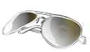
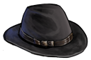
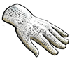
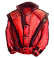
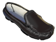

Получено: файл; исходный URL. Иллюстрация «Звёздная коллекция» из каталога ViveR_9, сопоставлена по точному названию; возможны отличия версий. Оригинальный файл без перекодирования; авторство отдельно не установлено. Страница: источник.

Звёздная коллекция
Браузерная социальная версия; историческая статья; дата редакции неизвестна- Тип
- Коллекции
- Версия и дата
- Браузерная социальная версия; историческая статья; дата редакции неизвестна
Элементы коллекции















Данные по источнику · Браузерная социальная версия · историческая статья; дата редакции неизвестна
Предварительно: один материал, требуется сверка. Требуется сверка.
- Состав (источник Zombie-island)
- Зеркальные очки; Шляпа; Бриллиантов перчатка; Куртка зомби; Чёрная туфля.
- Награда (источник Zombie-island)
- 1 Лист золота; 300 Опыт.
- Где копать Звёздную коллекцию в Зомби Ферме лопатами
- Пара дровосек. с мозгами; Пара камнетес. с мозгами; Дровосек; Дровосек с мозгами; Пара Дровосеков; Камнетес; Камнетес с мозгами; Пара Камнетесов; Склеп; Марафонец; Флаг Марафонца; Маленькая ёлочка; Фонарь раз; Фонарь два; Белый мрамор 1; Белый мрамор 2; Черный мрамор 1; Черный мрамор 2; Зеленый мрамор 2; Зеленый мрамор 3; Валун средний; Валун большой; Таверна; Весенняя ваза 3; Весенняя ваза 2; Весенняя ваза 1; Чучело за зомбаксы; Чучело.
- Звездная коллекция есть в Сундуках от Глазной яблони и Чудовища
- Сундук Глазной яблони; Сундук Чудовища.
- Звездная коллекция выпадает из ценностей и сокровищ
- Коллекционная посылка; Коллекционный; Коллекционер; Новогодняя елка; Вишневый торт; Новогодняя елка за дубл; Новогодняя елка за зб.
- Звездную коллекцию можно найти, колдуя Палочками
- Палочка-выручалочка; Подземный кактус.
- Звездная коллекция попадается на Пиратских островах Зомби Фермы
- Пиратский сундук.
- Страница сайта Звёздная коллекция
- Описание:.
Данные по источнику · браузерная версия; платформа не указана · дата редакции не установлена
Предварительно: Содержимое списка: изображения и колонки могут терять смысл при извлечении текста; отдельная страница и дата не проверены. Подписи alt иногда ошибочны.. Требуется сверка.
- Текст карточки из каталога
- 300 опыта и Лист золота Зеркальные очки Шляпа Бриллиантовая перчатка Куртка зомби Чёрная туфля Где лучше всего копается Звёздная коллекция: Склеп, Камнетес, Пара камнетесов, Дровосек, Пара дровосеков, Сторож, Фонарь, Пирс, цветочный декор, Марафонец.
Данные по источнику · Мой Мир (Mail.ru); историческая таблица · дата редакции не установлена
Предварительно: Источник сам использует знаки вопроса; не следует считать такие места подтверждёнными. Возможны изменения патча и платформы; независимость от других справочников не доказана.. Требуется сверка.
- Название в источнике
- Звёздная коллекция
- Где копать
- Склеп, Камнетес, Пара камнетес, Дровосек, Пара дровосеков, Сторож, Фонарь, Пирс, цветочный декор
- Награда
- 300 опыта и Лист золота
Данные по источнику · браузерная версия; на сайте указана игра ВКонтакте · дата редакции не установлена
Предварительно: Исторический текст; сильно совпадает со справкой Zommbie.at.ua, независимость не доказана. Отрицания и доступность могут измениться с патчем.. Требуется сверка.
- Где искать по странице «Зомбастики»
- Камнетес, пара камнетесов, дровосек, пара дровосеков, сторож, склеп, фонарь, камни островов Любви и Майя.
Данные по источнику · историческая браузерная версия, платформа не указана · 10.01.2014 — дата в каталоге; дата редакции материала неизвестна
Предварительно: Фанатский список без вероятностей и уточнения площадки; независимость от других источников не установлена.. Требуется сверка.
- Где искать по списку сайта
- Камнетес, пара камнетесов, дровосек, пара дровосеков, сторож, склеп, фонарь, камни островов Любви и Майя.
- Оговорка
- Список может относиться к разным условиям, инструментам и периодам игры; не доказывает гарантированное выпадение. Заявления «только» и «невозможно» относятся лишь к времени и версии источника.
Данные по источнику · историческая браузерная игра; площадка не уточнена · 08.10.2017 — дата каталога; редакция неизвестна
Предварительно: Проверен текст в каталоге сайта; вероятность выпадения не указана. Исторические версии и даты могут различаться; списки и награды требуют сверки, независимость сайта от других справочников не установлена.. Требуется сверка.
- Награда в источнике
- Лист золота и 300 опыта
- Места в источнике
- Дровосек, камнетёс, склеп, марафонец, фонарь, белый, чёрный и зелёный мрамор, таверна, чучело.
Связанные сущности
нет проверенных связей — требуется сверка.
Источники
- прочитано: Zombie-island.moy.su; проверка 2026-11-21
- ZOMBIA: прочитана карточка в списке
- Ссылка на отдельную страницу; отдельно не проверена
- Zombiemail: строка таблицы коллекций; Мой Мир
- Зомбастики: прочитана соответствующая строка; возможная копия другого справочника
- ViveR_9: изображение в каталоге коллекций; совпадение названия
- zommbie.at.ua: где искать коллекции
- zombi-ferma.ucoz.net: каталог коллекций